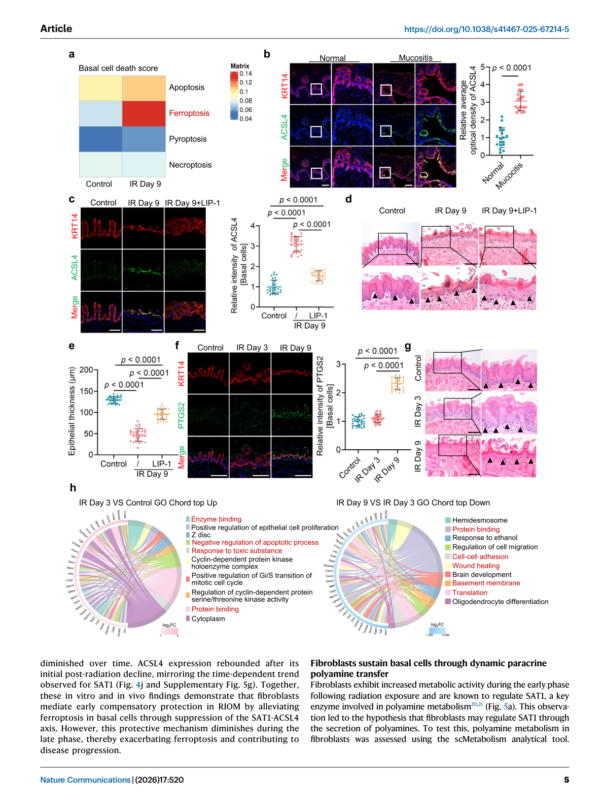
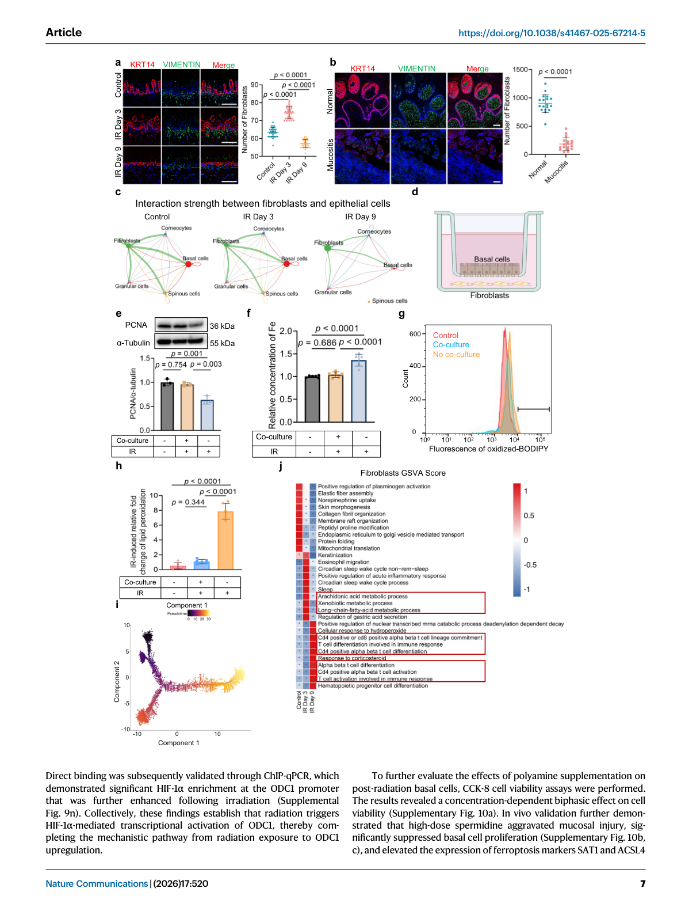
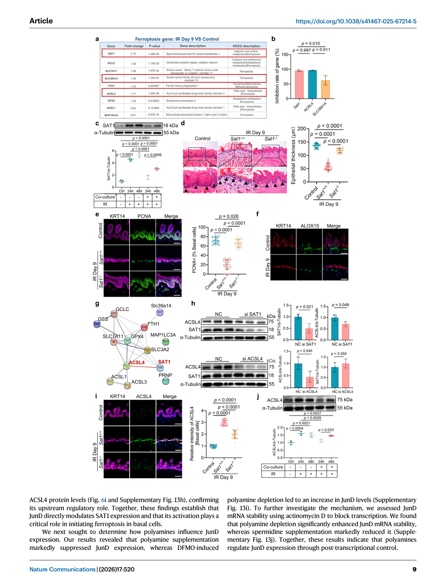
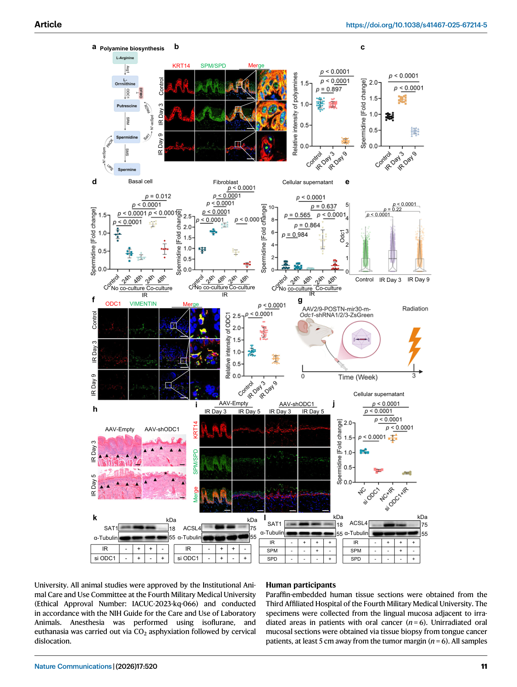
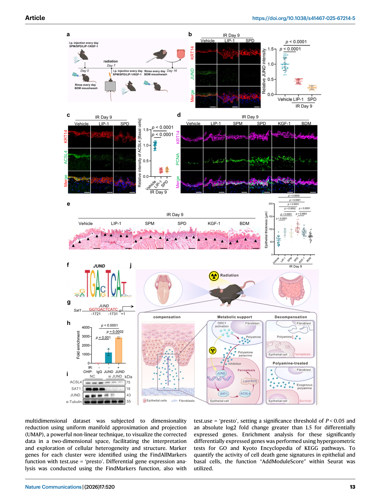
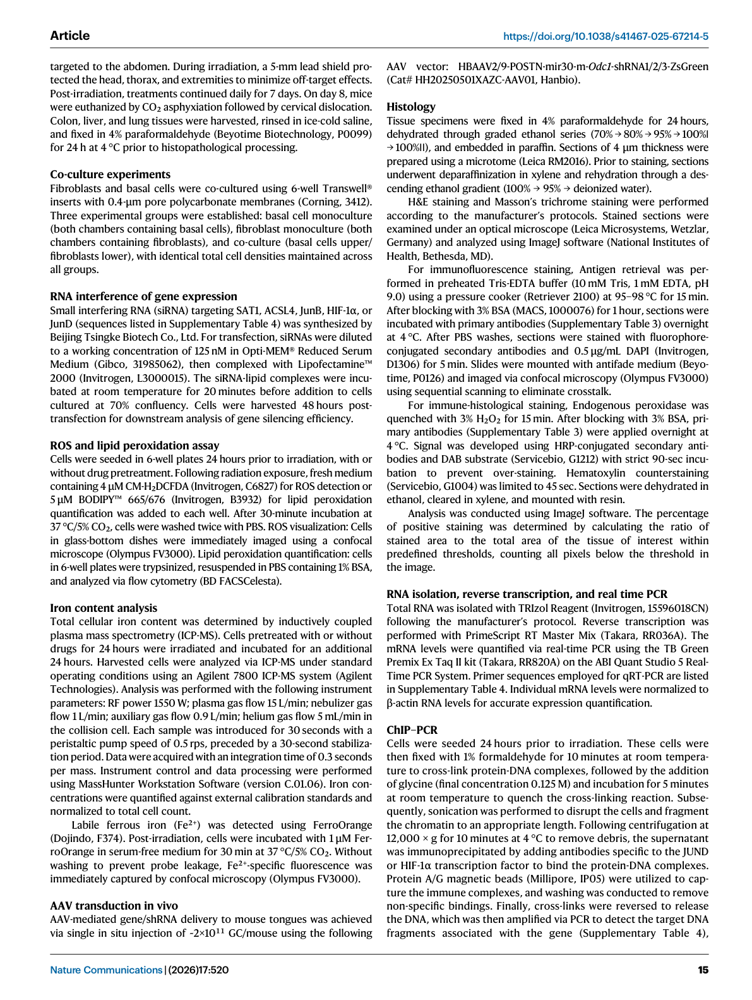

本文献笔记由 Claudian 自动生成，元数据已同步至 Zotero (ItemID: 1751)
中文标题#
代谢支持可保护黏膜免受放射性黏膜炎中的铁死亡
中文摘要#
电离辐射虽然是有效的癌症治疗手段，但会对黏膜造成严重损伤，从而增加患者不适、延迟治疗并提高死亡率。黏膜损伤的潜在机制目前仍知之甚少，且现有治疗大多仅为姑息性治疗。本研究首次证实，铁死亡是辐射导致口腔黏膜上皮细胞耗竭的主要细胞死亡形式。值得注意的是，在辐射暴露后的早期阶段还存在一个代偿期，在此期间成纤维细胞提供关键的代谢支持。具体而言，成纤维细胞供给多胺（polyamines），这些多胺可被基底上皮细胞直接吸收，从而保护其免于铁死亡。补充多胺被发现能有效预防黏膜损伤。这些发现凸显了成纤维细胞介导的代谢支持在保护口腔黏膜免受辐射损伤中的关键作用，并为增强机体对辐射相关疾病的内在保护机制提供了新的思路。
一、研究背景与科学问题#
1.1 疾病背景#
- RIOM（放射性口腔黏膜炎）：头颈部肿瘤放疗最常见的并发症之一，表现为黏膜萎缩或溃疡，伴随严重疼痛和屏障功能受损
- 临床困境：现有治疗以姑息性为主（如镇痛、抗炎），缺乏针对核心病理机制的靶向干预
- 临床意义：黏膜损伤导致治疗中断，影响放疗疗效，增加感染和死亡风险
1.2 机制背景#
- 已知电离辐射直接导致 DNA 双链断裂和 ROS 积累，引发细胞损伤
- 既往研究聚焦于凋亡通路，但抗凋亡药物在 RIOM 临床试验中效果有限 → 提示其他细胞死亡形式参与
- 铁死亡（Ferroptosis）：一种铁依赖的脂质过氧化驱动的细胞死亡形式，以往未被系统研究于 RIOM
1.3 三个核心科学问题#
| 编号 | 科学问题 |
|---|---|
| Q1 | 电离辐射通过何种细胞死亡机制导致口腔黏膜上皮细胞耗竭？ |
| Q2 | 辐射后是否存在内在保护机制？其细胞和分子基础是什么？ |
| Q3 | 如何通过增强内源性保护或外源补充来预防 RIOM？ |
二、整体研究思路#
【临床问题】RIOM 缺乏靶向治疗
↓
【单细胞图谱】scRNA-seq 揭示辐射后细胞组成变化
↓
【核心发现1】铁死亡是上皮细胞主要死亡形式 → Q1
↓ +【早期代偿现象】辐射后早期黏膜反而增厚
↓
【细胞通讯】CellChat 分析发现成纤维细胞-上皮细胞代谢互作
↓
【核心发现2】成纤维细胞分泌多胺保护基底细胞 → Q2
↓
【分子机制】HIF-1α→ODC1↑ → 多胺↑ → JunD↓ → SAT1↓ → ACSL4↓ → 抑制铁死亡
↓
【治疗转化】补充生理浓度多胺预防/治疗 RIOM（口腔、结肠、肝脏、肺）→ Q3
数据来源：
- PRJNA1221123：小鼠舌/口腔黏膜，18 Gy，3个时间点（对照/照后3天/照后9天），41,810 cells
- 患者样本：人舌 RIOM 活检组织
三、主要结果（逐图总结）#
Result 1 | Figure 1 — 辐射导致上皮内环境稳态失衡#
- 核心发现：辐射引起人和小鼠口腔黏膜显著上皮变薄和基底细胞耗竭
- 主要证据：
- 人舌 RIOM 活检：上皮显著变薄、连续性中断，基底细胞增殖减少
- 小鼠 18 Gy 照射：照后第9天出现黏膜损伤，组织病理学与人类高度相似
- scRNA-seq（28,189 cells）：鉴定9种主要细胞类型；辐射后上皮细胞数量急剧下降
- 基底细胞（KRT14/KRT5/KRT15 markers）是主要受累亚群
- 意义：建立了 RIOM 的小鼠模型和单细胞参考图谱
图注： Fig. 1 | Radiation-induced epithelial thinning and basal cell depletion in human and mouse oral mucosa. (a) Clinical appearance of human RIOM tongue tissue. (b-d) Epithelial thinning and discontinuity with reduced basal cell proliferation in human biopsies. (e-h) Murine 18 Gy cranial radiation model recapitulates human RIOM pathology. (i) scRNA-seq UMAP of 9 major cell types. (j) Sharp reduction in epithelial cell numbers post-radiation. (k-l) Epithelial subpopulations: basal, spinous, granular, corneocytes. (m) Four major cellular compartments in oral mucosa.
Result 2 | Figure 2 — 辐射在基底上皮细胞中诱导铁死亡#
- 核心发现：铁死亡是辐射诱导基底上皮细胞死亡的主要形式
- 主要证据：
- AddModuleScore：辐射后铁死亡评分显著升高
- ACSL4（铁死亡诱导酶）在人 RIOM 基底细胞中表达升高
- Liproxstatin-1（LIP-1，铁死亡抑制剂）处理：抑制 ACSL4 表达，恢复黏膜厚度
- 体外实验：辐射降低基底细胞增殖，增加死亡率；Fer-1 比 Z-VAD-fmk（凋亡抑制剂）保护效果更强
- 辐射增加细胞内 ROS 和不稳定铁池（labile iron pool），Fer-1 可逆转
- 脂质过氧化蓄积（铁死亡标志物）
- 早期阶段特性：PTGS2（铁死亡标志物）在早期无显著升高，到晚期才显著升高
- 意义：首次确认铁死亡是 RIOM 的核心细胞死亡机制
图注： Fig. 2 | Ionizing radiation induces ferroptosis in basal epithelial cells. (a) Ferroptosis gene set scores elevated post-radiation. (b) ACSL4 expression in human RIOM basal cells. (c-e) LIP-1 suppresses ACSL4 and restores mucosal thickness. (f) PTGS2 dynamics: early phase no change, late phase elevated. (g) Early phase: mucosal thickening and basal cell proliferation without significant DNA damage.
Result 3 | Figure 3 — 成纤维细胞在辐射早期保护基底细胞#
- 核心发现：辐射早期成纤维细胞与基底细胞间存在代谢互作网络，提供代偿性保护
- 主要证据：
- scRNA-seq CellChat 分析：辐射后早期成纤维细胞与上皮细胞间通讯显著增强
- 成纤维细胞分泌多种代谢因子（多胺、色氨酸代谢物等）
- 体外共培养：成纤维细胞条件培养基（CM）保护基底细胞免于辐射诱导的铁死亡
- 早期（3天）：黏膜增厚，基底细胞增殖活跃；晚期（9天）：代偿减弱，损伤加剧
- 意义：揭示了机体对辐射应激的内源性保护机制
图注： Fig. 3 | Fibroblasts protect basal cells in the early stage of radiation-induced mucositis. (a-b) CellChat analysis showing enhanced fibroblast-epithelial communication in early phase. (c) Fibroblast secretome includes polyamines and metabolites. (d-e) Fibroblast conditioned medium (CM) protects basal cells from radiation-induced ferroptosis in co-culture. (f) Early phase (day 3): mucosal thickening; late phase (day 9): compensatory decline.
Result 4 | Figure 4 — 成纤维细胞通过抑制 SAT1-ACSL4 轴抑制铁死亡#
- 核心发现：成纤维细胞通过抑制 SAT1-ACSL4 信号轴缓解辐射诱导的铁死亡
- 主要证据：
- 成纤维细胞 CM 降低基底细胞中 SAT1 和 ACSL4 表达
- SAT1（SPT7L/anthrasilb）通过激活多不饱和脂肪酸参与铁死亡
- ACSL4 蛋白水平与 SAT1 变化一致
- 体内：LIP-1 处理后 ACSL4 表达被抑制，黏膜厚度恢复
- 时间依赖性：SAT1/ACSL4 在早期受抑制（成纤维细胞保护），晚期反弹（保护减弱）
- 意义：阐明了成纤维细胞保护作用的分子下游
图注： Fig. 4 | Fibroblasts inhibit ferroptosis in basal cells through suppression of the SAT1-ACSL4 axis. (a) Fibroblast CM reduces SAT1 and ACSL4 in basal cells. (b-c) SAT1 activates polyunsaturated fatty acids for ferroptosis. (d-e) ACSL4 protein mirrors SAT1 dynamics. (f) LIP-1 suppresses ACSL4 and restores mucosal thickness in vivo. (g) Temporal pattern: SAT1/ACSL4 suppressed early, rebounded late.
Result 5 | Figure 5 — 成纤维细胞产生多胺抑制铁死亡#
- 核心发现：成纤维细胞在辐射后早期阶段代谢活性增强，产生多胺（精胺、亚精胺）保护基底细胞
- 主要证据：
- scRNA-seq + GSVA：辐射后成纤维细胞多胺代谢通路活性显著升高（早期），随时间下降
- 免疫荧光：亚精胺/精胺在基底细胞中维持早期稳态
- LC-MS：舌组织成纤维细胞多胺水平在早期有效维持，晚期耗竭
- ODC1（鸟氨酸脱羧酶，多胺合成限速酶）在成纤维细胞中表达升高，受 HIF-1α 转录调控
- ChIP-qPCR：HIF-1α 在 ODC1 启动子区显著富集，辐射后进一步增强
- 意义：鉴定出保护性代谢因子的细胞来源和合成调控机制
图注： Fig. 5 | Fibroblasts produce polyamines that inhibit ferroptosis in basal cells. (a) GSVA: polyamine metabolic pathway elevated in fibroblasts early post-radiation. (b) Immunofluorescence for spermidine/spermine in basal cells. (c) LC-MS analysis of tongue fibroblasts. (d) ODC1 (ornithine decarboxylase, rate-limiting for polyamine synthesis) elevated in fibroblasts. (e) HIF-1α transcriptionally activates ODC1. (f) ChIP-qPCR: HIF-1α enrichment at ODC1 promoter, enhanced post-irradiation.
Result 6 | Figure 6 — 多胺抑制铁死亡并逆转黏膜损伤#
- 核心发现：补充生理浓度（低浓度）多胺可抑制 SAT1 表达，减少脂质过氧化，逆转黏膜损伤；高浓度多胺反而促铁死亡；JunD 介导多胺对 SAT1 的调控
- 主要证据：
- 低浓度多胺：抑制 SAT1 表达，减少脂质过氧化，抑制铁死亡
- 高浓度多胺：促进脂质过氧化，诱导铁死亡（双向浓度效应）
- 辐射前预加低浓度亚精胺/精胺：显著抑制铁死亡，保护黏膜完整
- 体内给药：多胺补充显著改善小鼠口腔、结肠、肝脏和肺部的辐射损伤
- JunD（转录因子）直接调控 SAT1 表达；多胺补充抑制 JunD；DFMO（多胺合成抑制剂）增加 JunD 水平
- ACSL4 蛋白水平与 JunD 变化一致，证实 JunD→SAT1→ACSL4 上游调控关系
- 意义：提出了多胺靶向治疗 RIOM 的转化策略
图注： Fig. 6 | Polyamines inhibit ferroptosis and reverse mucosal damage in radiation-induced mucositis. (a-b) Low-dose polyamines: suppress SAT1, reduce lipid peroxidation, inhibit ferroptosis. (c) High-dose polyamines: enhance lipid peroxidation, promote ferroptosis (biphasic dose response). (d-e) Pre-treatment with low-dose spermidine/spermine before radiation: suppresses ferroptosis, protects mucosal integrity. (f) In vivo: polyamine supplementation improves mucosal damage in oral cavity, colon, liver, and lungs. (g) JunD directly modulates SAT1 expression; polyamine supplementation suppresses JunD. (h-i) DFMO (polyamine synthesis inhibitor) increases JunD and ACSL4 levels.
四、机制模型#
4.1 分子机制全图#
辐射暴露
↓
┌─────────────────────────────────────────────┐
│ 成纤维细胞（早期代偿） │
│ HIF-1α → ODC1↑ → 多胺（spermidine/spermine）↑ │
└─────────────────────────────────────────────┘
↓（旁分泌）多胺被基底细胞吸收
┌─────────────────────────────────────────────┐
│ 基底上皮细胞 │
│ 多胺 → JunD↓ → SAT1↓ → ACSL4↓ → 铁死亡抑制 │
│ ↕（晚期：多胺耗竭，保护减弱） │
│ ROS↑ + 不稳定铁池↑ + 脂质过氧化↑ │
│ → 铁死亡 → 黏膜损伤 │
└─────────────────────────────────────────────┘
4.2 时间演进模型#
| 阶段 | 时间 | 成纤维细胞 | 基底细胞 | 黏膜状态 |
|---|---|---|---|---|
| 早期代偿 | 照后 0-3 天 | HIF-1α↑ → ODC1↑ → 多胺↑ | JunD↓ → SAT1↓ → ACSL4↓ | 增厚，保护性增殖 |
| 过渡期 | 照后 5-7 天 | 多胺代谢活性下降 | 铁死亡开始加重 | 临界状态 |
| 晚期损伤 | 照后 9+ 天 | 多胺耗竭 | SAT1/ACSL4 反弹 → 铁死亡加剧 | 变薄，溃疡 |
4.3 治疗转化模型#
【预防策略】
辐射前预服低剂量多胺（亚精胺/精胺）
→ 抑制 JunD → 下调 SAT1/ACSL4
→ 预防黏膜损伤
【治疗策略】
已知 RIOM 患者补充多胺
→ 多部位保护（口腔、结肠、肝、肺）
→ 改善生活质量，减少治疗中断
【靶点优势】
vs 直接抑制铁死亡（LIP-1/Fer-1）：更安全，适合长期使用
调动内源性保护机制，符合生理性治疗理念
五、讨论与结论#
5.1 核心发现#
- 铁死亡是 RIOM 的核心细胞死亡机制：首次系统证实，填补了领域空白
- 成纤维细胞-基底细胞代谢互作网络：早期代偿期成纤维细胞供给多胺，关键保护作用
- HIF-1α→ODC1→多胺→JunD→SAT1→ACSL4 完整信号通路：机制链条清晰完整
- 多胺的双向浓度效应：生理浓度保护，高浓度促死亡 → 治疗窗口明确
5.2 研究亮点#
- ✅ scRNA-seq 引领发现：首次构建 RIOM 单细胞图谱，发现成纤维细胞保护性代谢
- ✅ 首次确认铁死亡在 RIOM 中的核心地位：改变了对 RIOM 细胞死亡机制的传统认知
- ✅ 临床转化潜力强：多胺为小分子化合物，安全性和药代动力学已有大量基础
- ✅ 多部位验证：不仅是口腔黏膜，还验证了结肠、肝脏和肺部，具有广泛适用性
5.3 研究局限性#
- 种属差异：小鼠模型与人类 RIOM 存在一定差异（如辐射剂量、黏膜结构）
- 多胺剂量精准性：双向浓度效应要求精准剂量控制，临床转化需严格剂量优化
- 长期安全性：多胺长期补充的安全性数据尚不充分
- 机制深度：JunD 对 SAT1 的直接转录调控尚需 ChIP-seq 数据进一步验证
- 临床样本量：人类 RIOM 组织样本量有限
5.4 未来方向#
- 多胺作为 RIOM 预防性或治疗性补充剂的临床试验设计
- 其他黏膜损伤（如放射性肠炎）的类似机制探索
- 多胺代谢通路中其他代谢物（如犬尿氨酸、色氨酸代谢物）的独立作用研究
六、参考文献#
- Yu W, Jiao K, Wang K, et al. Metabolic support protects mucosa from ferroptosis in radiation-induced mucositis. Nat Commun. 2026;17:520. doi:10.1038/s41467-025-67214-5
- Dixon SJ, et al. Ferroptosis: an iron-dependent form of nonapoptotic cell death. Cell. 2012;149(5):1060-1072. PMID: 22632975
- Koppenol WH, Bounds PL, Dang CV. Otto Warburg's contributions to current concepts of cancer metabolism. Nat Rev Cancer. 2011;11(5):325-337.
- Stockwell BR, et al. Ferroptosis: A regulated cell death nexus linking metabolism, redox biology, and disease. Cell. 2017;171(2):273-285.
- Zhang Y, et al. elF2α/ATF4 pathway as a therapeutic target in radiation-induced mucosal injury. Radiat Res. 2021.
- Sonis ST. The pathobiology of mucositis. Nat Rev Cancer. 2004;4(4):277-284. PMID: 15089453
- Li Q, et al. ACSL4 is a key regulator of ferroptosis in cancer cells. Cancer Cell. 2022.
- Doll S, et al. FSP1 is a glutathione-independent ferroptosis suppressor. Nature. 2019;575(7784):693-698.
关键图表 (Figure 1-6)#
以下为论文原图，按研究逻辑顺序排列。
Figure 1 | Radiation-induced epithelial thinning and basal cell depletion#

图注： Fig. 1 | Radiation-induced epithelial thinning and basal cell depletion in human and mouse oral mucosa.
- (a) Clinical appearance of human RIOM tongue tissue
- (b-d) Epithelial thinning and discontinuity with reduced basal cell proliferation
- (e-h) Murine 18 Gy cranial radiation model recapitulates human RIOM
- (i) scRNA-seq UMAP: 9 major cell types
- (j) Sharp reduction in epithelial cells post-radiation
- (k-l) Epithelial subpopulations: basal, spinous, granular, corneocytes
- (m) Four major cellular compartments: epithelial basal cells, fibroblasts, endothelial cells, immune cells
Figure 2 | Ionizing radiation induces ferroptosis in basal epithelial cells#

图注： Fig. 2 | Ionizing radiation induces ferroptosis in basal epithelial cells.
- (a) Ferroptosis gene set scores significantly elevated post-radiation
- (b) ACSL4 expression increased in human RIOM basal cells
- (c-e) LIP-1 (ferroptosis inhibitor) suppresses ACSL4 and restores mucosal thickness
- (f) PTGS2 dynamics: early phase no change, late phase elevated
- (g) Early phase characterized by mucosal thickening and basal cell proliferation
Figure 3 | Fibroblasts protect basal cells in the early stage#

图注: Fig. 3 | Fibroblasts protect basal cells in the early stage of radiation-induced mucositis.
- (a-b) CellChat analysis showing enhanced fibroblast-epithelial intercellular communication in early phase
- (c) Fibroblast secretome includes polyamines and key metabolites
- (d-e) Fibroblast conditioned medium (CM) protects basal cells from radiation-induced ferroptosis in co-culture
- (f) Temporal progression: early phase (day 3) mucosal thickening, late phase (day 9) compensatory decline
Figure 4 | Fibroblasts inhibit ferroptosis via SAT1-ACSL4 axis#

图注: Fig. 4 | Fibroblasts inhibit ferroptosis in basal cells through suppression of the SAT1-ACSL4 axis.
- (a) Fibroblast CM reduces SAT1 and ACSL4 protein levels in basal cells
- (b-c) SAT1 activates polyunsaturated fatty acids for ferroptosis
- (d-e) ACSL4 protein levels mirror SAT1 dynamics over time
- (f) LIP-1 suppresses ACSL4 and restores mucosal thickness in vivo
- (g) Temporal pattern: SAT1/ACSL4 suppressed in early phase, rebounded in late phase
Figure 5 | Fibroblasts produce polyamines#

图注: Fig. 5 | Fibroblasts produce polyamines that inhibit ferroptosis in basal cells.
- (a) GSVA: polyamine metabolic pathway elevated in fibroblasts during early post-radiation phase, declining over time
- (b) Immunofluorescence for spermidine/spermine in basal cells
- (c) LC-MS analysis of tongue fibroblasts: polyamine homeostasis maintained in early phase
- (d) ODC1 (rate-limiting enzyme for polyamine synthesis) elevated in fibroblasts
- (e) HIF-1α transcriptionally activates ODC1
- (f) ChIP-qPCR: HIF-1α enrichment at ODC1 promoter, further enhanced post-irradiation
Figure 6 | Polyamines inhibit ferroptosis and reverse mucosal damage#

图注: Fig. 6 | Polyamines inhibit ferroptosis and reverse mucosal damage in radiation-induced mucositis.
- (a-b) Low-dose polyamines suppress SAT1 by reducing lipid peroxidation, inhibiting ferroptosis
- (c) High-dose polyamines promote ferroptosis by enhancing lipid peroxidation (biphasic dose response)
- (d-e) Pre-treatment with low-dose spermidine or spermine before radiation: significantly suppresses ferroptosis
- (f) In vivo: polyamine supplementation improves mucosal damage in oral cavity, colon, liver, and lungs
- (g) JunD directly modulates SAT1 expression; polyamine supplementation suppresses JunD
- (h-i) DFMO-induced polyamine depletion increases JunD and ACSL4 levels, confirming upstream regulatory role
完成情况#
| 步骤 | 状态 |
|---|---|
| Zotero 建档 | ✅ ItemID: 1751（已存在） |
| Obsidian 文献夹 | ✅ 已创建 |
| 图表截图 | ✅ Figure 1-6 已渲染（6张图，4.4 MB） |
| 原文笔记 | ✅ 已生成（.md） |
| 中文文献汇报 | ⏳ 待生成（.docx + .md） |
关联笔记：
- RIOM公开数据汇总0410hz
- 铁死亡与细胞死亡 Collection
- 代谢重编程 Collection
- 细胞互作 Collection